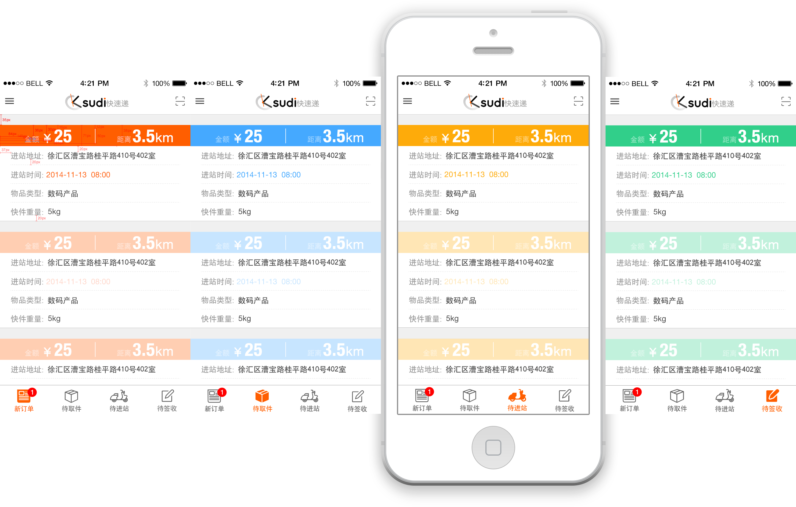
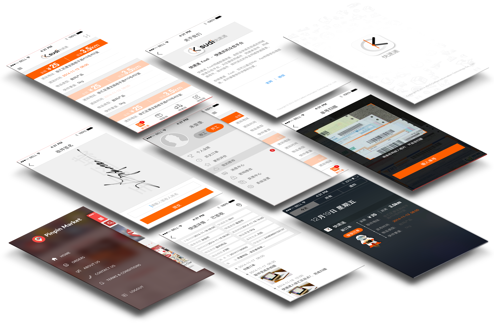

Ksudi Part-time Project
This app is made for those people who take delivery for a part-time job. With this app, you can delivery stuff quickly and safely at any time. And it can makes your delivery job easier. After registration, you will be your own boss. Not only help you earn money, it can also improve the efficiency of your local delivery service, providing cost savings and enhanced customer relations. So, get start today!

Real-time Map
Real-time Map helps you all the time.
